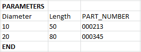

Reusable components in a Teamcenter environment enhancement
What is it?
There is enhanced support for managing reusable components in a Teamcenter environment. You can assign the item ID of an object to a specific set of parameters stored as spreadsheet data. When you set the parameters of a reusable component in the Primary Parameters dialog box, the item that is associated with those parameters is added to your model.
In the example below, if a Diameter of 20 is specified as a primary parameter, then item 000345 is added to the assembly.

Where do I find it?
|
Resource bar |
Reuse Library |
|
Prerequisite |
You must add a reusable component from the Reuse Library to your model in a Teamcenter environment. |